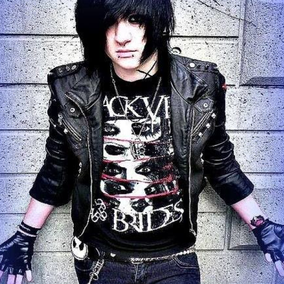
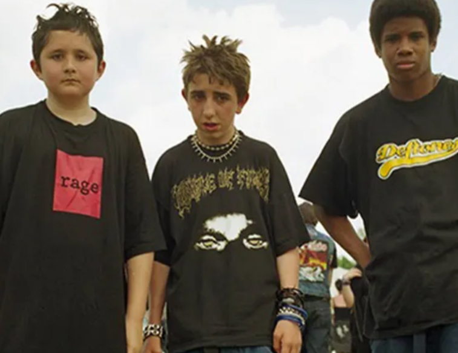
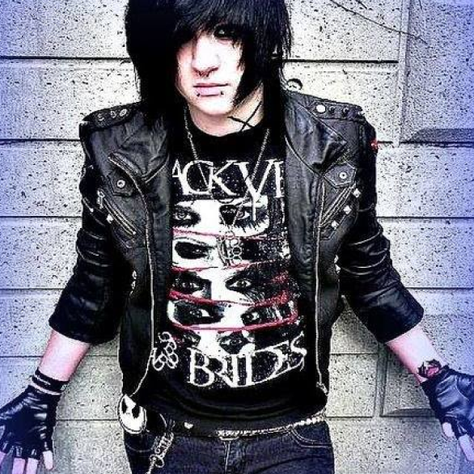
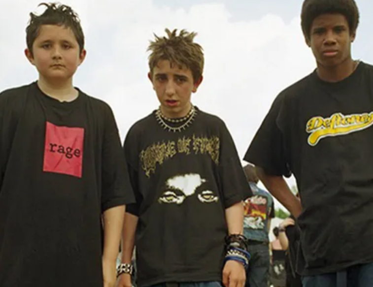

Roots & Origins
Emo first developed in Washington D.C in the 1980s, born out of the city’s hardcore punk scene where it was known as emotional hardcore or emocore Nu metal appeared in the 90s with groups like Korn of Deftones. It mixes electronic sounds, sometimes DJ mixing, thrash vocals with a phrasing borrowed from hip-hop Emo began in Washington, D.C., in the middle of the 1980s as a more melodic and emotional development of hardcore punk. When metal bands started fusing heavy guitar riffs with hip-hop rhythms, electronic components, and alternative rock influences in the early to mid-1990s, nu metal also began to take shape. Young people's frustration, identity exploration, and need to express feelings that traditional rock and metal typically disapproved of gave rise to both genres. Dark eyeliner, band T-shirts, and side-swept or layered hair are all common components of an emo look. Baggier clothing, hoodies, and occasionally more industrial or gothic elements are all part of the nu metal aesthetic. All things considered, both aesthetics use clothing as a means of expressing emotion, either as a visual representation of inner feelings or as a form of rebellion.
 


